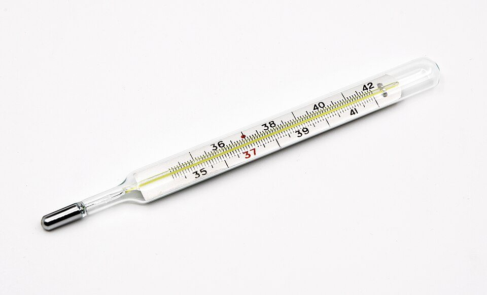
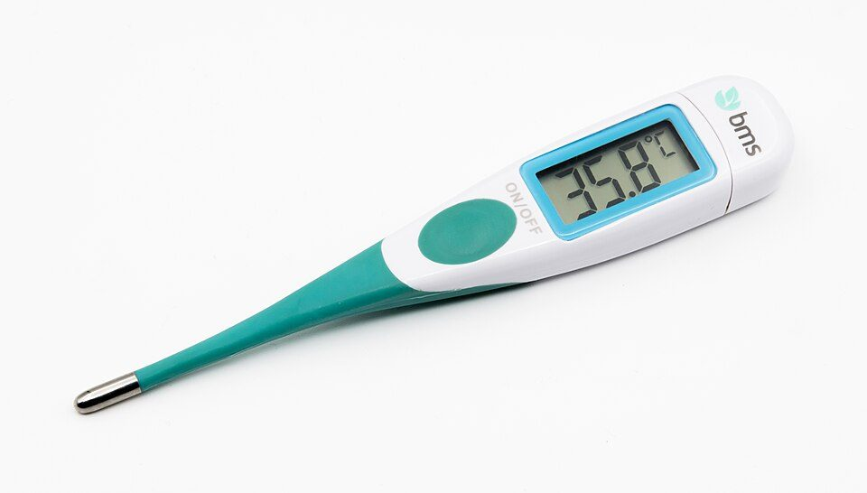

人間の体温はなぜ約37℃なのか：37℃の由来、体温を保つ仕組み、平熱の実際と測り方
要点まとめ
「平熱は36.5℃くらい」「37℃を超えたら微熱」とよく言われます。では、そもそも人間の体温はなぜ37℃前後なのでしょうか。この記事では、37℃という数字の由来、体温を一定に保つ仕組み、37℃前後になる理由についての研究、平熱の実際、「発熱」の定義と体温計の使い方を、論文と公的資料でまとめました。体調についての判断は、医師や公的機関の案内に従ってください。

「37℃」はどこから来たか
19世紀のドイツの医師が、わきの温度から決めた
2万5千人のわきの温度を測り、平熱を37℃とした
ドイツの医師ヴンダーリッヒは1851年から、ライプツィヒで2万5千人の患者のわきの温度を数多く測り、平熱を37℃（範囲36.2〜37.5℃）とする基準をつくりました[1]。1992年に米国で健康な成人148人（18〜40歳）の口の温度を調べた研究では、平均は37.0℃ではなく36.8℃でした[6]。この研究の著者らは、37℃という考え方は捨てるべきだと結論づけています[6]。
| 調べた時期 | 対象 | 測った場所 | 平均 |
|---|---|---|---|
| 1851年〜 | ドイツの患者2万5千人 | わき | 37℃[1] |
| 1957年 | 日本の健康な人3,094人 | わき | 36.89℃[3] |
| 1992年の報告 | 米国の健康な成人148人 | 口 | 36.8℃[6] |
| 2017年の報告 | 英国の患者3万5千人超 | 口 | 36.6℃[1] |
| 2019年 | 日本の健診の2,454件（20〜79歳） | わき（予測式の体温計） | 36.47℃[3] |
測った場所や体温計の種類が違うので、数字をそのまま比べることはできません（筆者の見解）。
体温を一定に保つ仕組み
熱をつくる量と逃がす量を、脳が調節する
寒いとふるえと褐色脂肪で熱をつくり、暑いと汗で逃がす
人などの恒温動物は、熱を逃がす量とつくる量を調節して体温を保っています[7]。ふだんは、脳が皮膚の血流を変えて、体の表面から逃げる熱の量を調節しています[7]。暑いときは汗をかき、その水分が蒸発するときに熱を奪います[7]。寒いときは、筋肉のふるえと、主に褐色脂肪でのふるえを伴わない熱産生で熱をつくります[7]。
1日の中では、早朝が低く夕方が高い
米国の研究では、朝6時が最低で、16〜18時が最高
1992年の米国の研究では、体温は朝6時ごろに最も低く、16〜18時に最も高くなり、その差の平均は0.5℃でした[6]。体温計メーカーの解説では、1日の変動の幅は1℃程度とされています[8]。この1日のリズムは、活動量が変わるためだけに起きるのではなく、動けないようにした動物でも保たれます[9]。リズムをつくっているのは、脳の視床下部にある体内時計の中枢（視交叉上核）です[9]。
発熱は、脳の「設定温度」が上がること
熱が下がるときに汗が出るのは、設定温度が元に戻るから
感染や炎症が起きると、脳の視索前野で体温の設定温度（セットポイント）が上がると考えられています[7]。すると、ふるえなどで熱をつくり、皮膚の血管を縮めて熱を逃がさないようにするので、体温が上がります[7]。発熱には、病原体が増えやすい温度より体の中を高くして増殖を抑える効果と、免疫細胞の働きを高める効果があると考えられています[7]。暑さで体温が上がる「うつ熱」とは仕組みが違います[7]。
なぜ37℃前後なのか
カビを防ぐ効果と、エネルギーのコストのつり合い
米国の研究者の計算では、いちばん得な体温は36.7℃
真菌（カビの仲間）4,802株を調べた研究では、多くは哺乳類の体温では育たず、30〜40℃の範囲では1℃上がるごとに育たない株が6%ずつ増えました[10]。この結果をもとに、体温を高くすると防げる真菌が増える効果と、体温を保つために必要なエネルギーのコストを比べたモデルでは、最も得な体温は36.7℃になりました[2]。
体温を高く保つには、たくさんの食べ物が必要
恒温動物は、変温動物の数十〜百倍のエネルギーをとる
哺乳類や鳥類は、体温を一定に保てるようになったことで、さまざまな気温の場所で暮らせるようになりました[11]。その代わりに、体重あたりで変温動物の数十倍から百倍のエネルギーを食べ物からとる必要があります[11]。体温が高いほど病原体を防ぎやすい一方、体温を保つコストも増えるので、その間のどこかに落ち着くという考え方です（筆者の見解）。
体温は、動物によって違う
鳥の体の中の温度は40〜41℃で、哺乳類より高い
生理学研究所の解説では、鳥類の深部体温は40〜41℃で、哺乳類（37℃）より高いとされています[12]。京都府の資料では、牛の平熱は37.5〜39.5℃です[13]。
平熱の実際
2019年の日本人の平均は36.47℃
1957年の調査の36.89℃より、0.4℃ほど低い
2019年の健診で、20〜79歳の日本人のわきの温度を測った2,454件の平均は36.47℃（男性36.48℃、女性36.35℃）でした[3]。1957年の調査では、健康な人3,094人の平均は36.89℃で、日本では今もこの値がよく引用されます[3]。ただし2019年の値は、10分測ったときの値を約20秒で予測する体温計によるものです[3]。
平均の体温は、少しずつ下がってきた
米国では、生まれた年が10年新しいごとに0.03℃低い
米国の3つの集団の67万7千件あまりの記録を分析した研究では、生まれた年が10年新しくなるごとに体温が0.03℃下がっていました[1]。19世紀初めに生まれた男性は、今の男性より0.59℃高い計算です[1]。著者らは、19世紀には結核などの慢性的な感染症が多く、それが当時の体温に影響した可能性を挙げています[1]。
平熱は、人によって違う
子どもはやや高く、高齢者はやや低い
体温計メーカーの解説では、子どもの平熱はやや高く、高齢者はやや低めです[15]。厚生労働省研究班が監修するサイトでは、女性は排卵のあと体温が0.3〜0.5℃上がるとしています[16]。
何℃から「発熱」か
感染症法の届出の基準では、37.5℃以上が「発熱」
38.0℃以上は「高熱」と定義されている
医師が感染症法に基づいて届け出るときの基準では、「発熱」は体温が37.5℃以上、「高熱」は38.0℃以上の状態とされています[4]。この定義は、病気の届出の基準として決められたものです。
新型コロナウイルス感染症では、相談の目安から「37.5度」の数字が外れました。
- 2020年2月17日
「37.5度以上の発熱が4日以上」などを目安にする
3月22日の事務連絡の中で引用[17]
- 3月13日
目安を一律に当てはめず、柔軟に判断するよう求める
- 3月22日
条件の両方にあてはまらなくても相談できると補足
- 5月8日
目安を改訂。「37.5度」の数字がなくなる
体温が上がりすぎ・下がりすぎたとき
| 状態 | 目安 |
|---|---|
| 熱中症（最も重いⅣ度） | 深部体温40.0℃以上で、重い意識障害がある[21] |
| 熱射病 | 体温が40℃以上に上がり、意識障害などが起きる[22] |
| 低体温症 | 深部体温35℃以下[23] |
| 重い低体温症 | 28℃で意識がなくなる[23] |
熱中症は、体に熱がたまって起きる
2024年の診療ガイドラインで、最も重い「Ⅳ度」ができた
環境省は、体温の上昇と調整の働きのバランスが崩れると、体に熱がたまって熱中症になると説明しています[24]。日本救急医学会の熱中症診療ガイドライン2024では、それまでのⅢ度から最も重いものを「Ⅳ度」として分けました[21]。Ⅳ度の入院中の死亡率は23.5%と高いとされています[21]。
正しい測り方
わきは約10分、口は約5分で本来の温度になる
予測式の体温計は、数分後の体温を計算して表示する
体温計メーカーの解説では、測った場所の温度をそのまま表示する実測式では、わきで約10分、口で約5分かかります[25]。予測式は、測り始めからの温度の上がり方をもとに、数分後の体温を予測して表示します[25]。額で測る体温計は約1秒で測れますが、表示する値をわきや口の温度に換算する方法は製品によって違います[25]。
予測式は、準備ができてから測り始める
準備が終わる前に測ると、低めに出ることがある
国民生活センターのテストでは、予測式の体温計を、測定の準備が終わる前にわきに挟んで測ると、正しい測り方より低めの値になりました[26]。同センターは、取扱説明書どおりに使い、より正確に測りたいときは実測検温をするよう呼びかけています[26]。
平熱は、同じ場所・同じ時間帯で測って知る
測る場所によって、1℃以上違うこともある
体温計メーカーの解説では、耳の中の温度が同じ37℃の人どうしでも、わきの温度は1℃以上ばらつくことがあります[5]。自分の平熱を知るには、同じ場所・同じ時間帯に何回か測っておくとよいと考えられます（筆者の見解）。日本を含む多くの国では、新しい水銀体温計の製造・販売は禁止されています[25]。

今回確認できなかった点
- 「酵素が働きやすい温度だから37℃」という説明を裏付ける公的資料・論文
- 1957年の日本の調査（田坂らの論文）と、ヴンダーリッヒの原著（論文で引用された値を使った）
- 1992年の米国の研究の本文（有料のため、要旨で確認した）
- 厚生労働省 e-ヘルスネットの体温の解説（サイトに接続できなかった）
- 環境省マニュアルのⅠ〜Ⅲ度の症状の表、電子体温計のJIS規格の数値
関連する記事
出典（26件）
閲覧日はいずれも2026年11月10日
- Decreasing human body temperature in the United States since the Industrial Revolution（Protsiv ほか、2020年1月7日）（eLife）
- Mammalian Endothermy Optimally Restricts Fungi and Metabolic Costs（Bergman・Casadevall、2010年）（mBio（PMC））
- Statistical Analysis of the Axillary Temperatures Measured by a Predictive Electronic Thermometer in Healthy Japanese Adults（Yoshihara ほか、2021年5月12日）（International Journal of Environmental Research and Public Health（PMC））
- 感染症法第12条第1項及び第14条第2項に基づく届出の基準等について（一部改正）（2026年2月5日）（厚生労働省）
- 体温はどこで測っても同じですか？（テルモ体温研究所）
- A critical appraisal of 98.6°F, the upper limit of the normal body temperature, and other legacies of Carl Reinhold August Wunderlich（Mackowiak ほか、1992年。要旨）（JAMA（PubMed））
- 温度生物学ハンドブック 2-1 自律性体温調節／発熱（自然科学研究機構 生理学研究所）
- 健康な時の体温はいつも同じですか？（テルモ体温研究所）
- 温度生物学ハンドブック 2-7 概日時計による体温の制御（自然科学研究機構 生理学研究所）
- Vertebrate endothermy restricts most fungi as potential pathogens（Robert・Casadevall、2009年。要旨）（The Journal of Infectious Diseases（PubMed））
- 温度生物学ハンドブック 2-24 恒温動物と変温動物（自然科学研究機構 生理学研究所）
- 温度生物学ハンドブック 2-20 鳥類における精巣の温度感受性（自然科学研究機構 生理学研究所）
- 生体検査（と畜検査の解説）（京都府）
- Rapidly declining body temperature in a tropical human population（Gurven ほか、2020年10月28日。本文）（Science Advances（PMC））
- 平熱は誰でも同じですか？（テルモ体温研究所）
- 基礎体温（女性の健康推進室 ヘルスケアラボ（厚生労働省研究班の監修））
- 事務連絡 新型コロナウイルス感染症についての相談・受診の目安について（2020年3月22日）（厚生労働省）
- 事務連絡「帰国者・接触者相談センター」における新型コロナウイルス感染症の相談・受診調整に係る留意事項について（2020年3月13日）（厚生労働省）
- 事務連絡 新型コロナウイルス感染症についての相談・受診の目安について（2020年5月8日）（厚生労働省）
- 別紙 新型コロナウイルス感染症についての相談・受診の目安（2020年5月8日）（厚生労働省）
- 保健医療科学 74巻2号「熱中症診療ガイドライン2024の作成経緯とその特徴」（2025年）（国立保健医療科学院）
- 熱中症に対する知識（熱中症環境保健マニュアル抜粋）（環境省）
- 温度生物学ハンドブック 2-29 哺乳類の低温障害（自然科学研究機構 生理学研究所）
- 熱中症予防情報サイト 熱中症とは（環境省）
- 体温計の種類（テルモ体温研究所）
- 測定値が低く表示された電子体温計（2023年12月13日）（国民生活センター）
写真・画像の出典（2件）
- ガラス製の体温計
写真: Jacek Halicki／Wikimedia Commons（CC BY-SA 4.0） - 電子体温計
写真: Jacek Halicki／Wikimedia Commons（CC BY-SA 4.0）